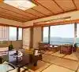
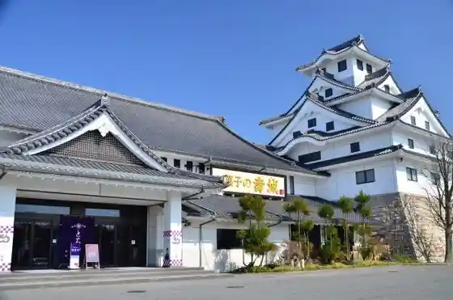
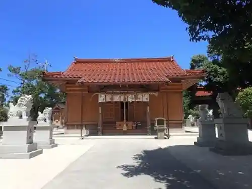
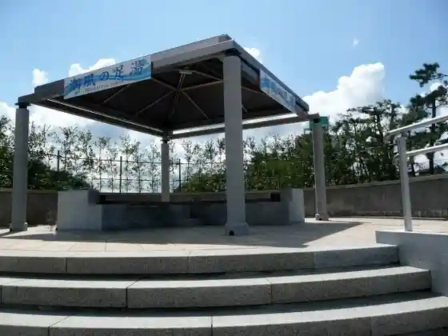

Kaike Onsen
Yonago, Tottori · 0859-34-2888 · Official / source link

O Kashi no Hisashi Shiro
Yonago, Tottori · 0859-39-4111 · Official / source link

Yonago Castle Ruins
Yonago, Tottori · 0859-22-6317 · Official / source link
Tomi Masu Shrine
Yonago, Tottori · 0859-37-2311 · Official / source link

Kaike Onsen no Ashiyu
Yonago, Tottori · 0859-34-2888 · Official / source link

Kaike Onsen Shrine
Yonago, Tottori · 0859-34-2888 · Official / source link
Yonago Mizutori Park
Yonago, Tottori · 0859-24-6139 · Official / source link
Awashima Shrine
Yonago, Tottori · 0859-37-2311 · Official / source link
Wa Kasa Densho Kan
Yonago, Tottori · 0859-56-6176 · Official / source link
Hiyoshi Shrine
Yonago, Tottori · 0859-56-2152 · Official / source link
Hoki Kodai no Oka Park
Yonago, Tottori · 0859-56-6817 · Official / source link
Minato Yama Park
Yonago, Tottori · 0859-22-6317 · Official / source link
Goto Ie House
Yonago, Tottori · 0859-23-5437 · Official / source link
Kamogawa Nakaumi Yuran
Yonago, Tottori · 0859-22-6317 · Official / source link
Ten no Manai
Yonago, Tottori · 0859-22-6317 · Official / source link
Kaike Onsen Kaiyu Beach (Kyu Kaike Onsen Beach)
Yonago, Tottori · 0859-37-2311 · Official / source link
Fuku City Iseki Fuku City Shiseki Park
Yonago, Tottori · 0859-22-6317 · Official / source link
Kamogawa Soi no Fukei
Yonago, Tottori · 0859-22-6317 · Official / source link
Daijin Yama Shrine (Honsha)
Yonago, Tottori · Official / source link
Waku Waku Tennen Onsen Rapisupa
Yonago, Tottori · 0859-56-1111 · Official / source link
Motomiya no Izumi
Yonago, Tottori · 0859-37-2311 · Official / source link
Oyu Land
Yonago, Tottori · 0859-31-3333 · Official / source link
Moto Otori Furusato Kan Te Shigoto Gyararii Kaike
Yonago, Tottori · 0859-34-2888 · Official / source link
Ue Yodo Haiji Ato
Yonago, Tottori · 0859-23-5436 · Official / source link
Kaike Onsen Shiikayakku
Yonago, Tottori · 0859-35-6785 · Official / source link
Kanko Fisshingu
Yonago, Tottori · 0859-33-4455 · Official / source link
Yodoe Donguri Village
Yonago, Tottori · 0859-27-6098 · Official / source link
Hakuho Village (Yodoe Yume Onsen)
Yonago, Tottori · 0859-56-6801 · Official / source link
Kanko Kurujingu
Yonago, Tottori · 0859-33-4455 · Official / source link
Yonago Tateyama In Rekishikan
Yonago, Tottori · 0859-22-7161 · Official / source link
Kodai Taiken Kosu
Yonago, Tottori · 0859-56-6817 · Official / source link
Yonago Shita Town Rekishi Fureai Machi Aruki
Yonago, Tottori · 0859-35-6785 · Official / source link
Yonago Yakusho
Yonago, Tottori · 0859-22-7111 · Official / source link